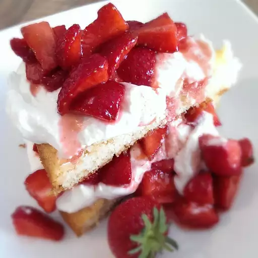

Cottage Pudding (Cake for Strawberry Shortcake) Recipe
Home

Ingredients
- 2 cups all-purpose flour
- 2 ½ teaspoons baking powder
- ¼ teaspoon salt
- ⅓ cup vegetable shortening
- 1 cup white sugar
- 1 large egg
- ½ teaspoon vanilla extract
- 1 cup milk
Steps
- Preheat the oven to 350 degrees F (175 degrees C). Grease a 9-inch square cake pan.
- Whisk flour, baking powder, and salt together in a bowl. Set aside.
-
Beat shortening and sugar with an electric mixer in a large bowl until light and fluffy. Beat in egg and vanilla extract until smooth. Add in
flour mixture alternately with milk, mixing until just combined. Pour batter into the prepared pan.
-
Bake in the preheated oven until a toothpick inserted into the center comes out clean, about 25 minutes. Cool in the pans for 10 minutes
before removing to cool completely on a wire rack.
Check Out the Other Recipes!